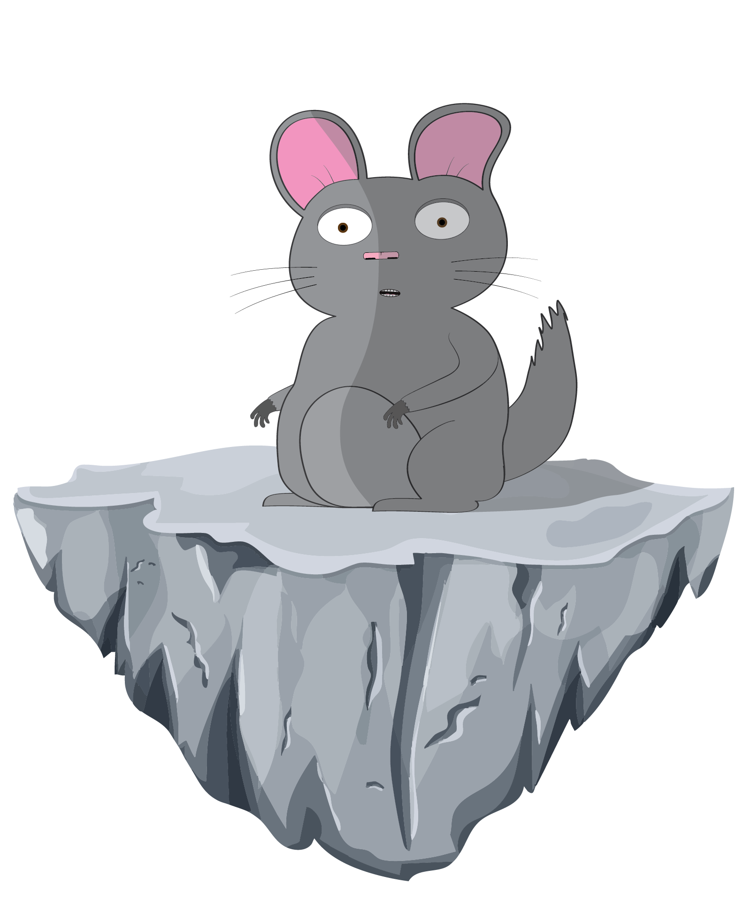
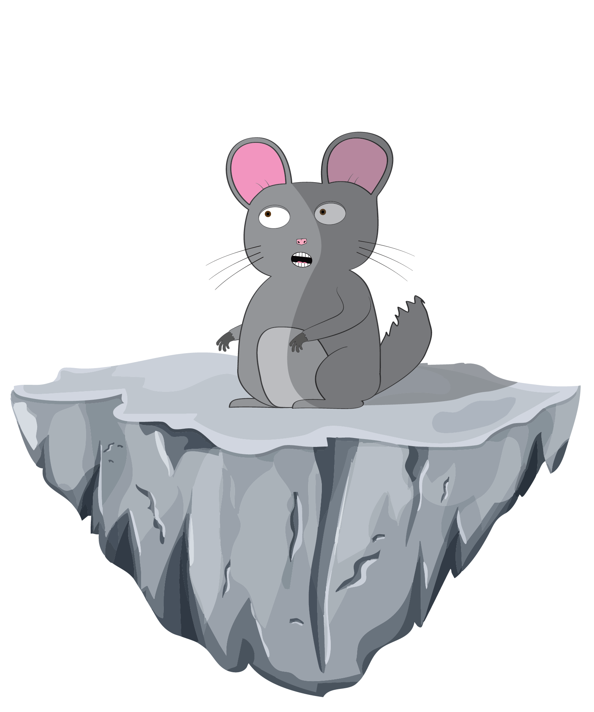
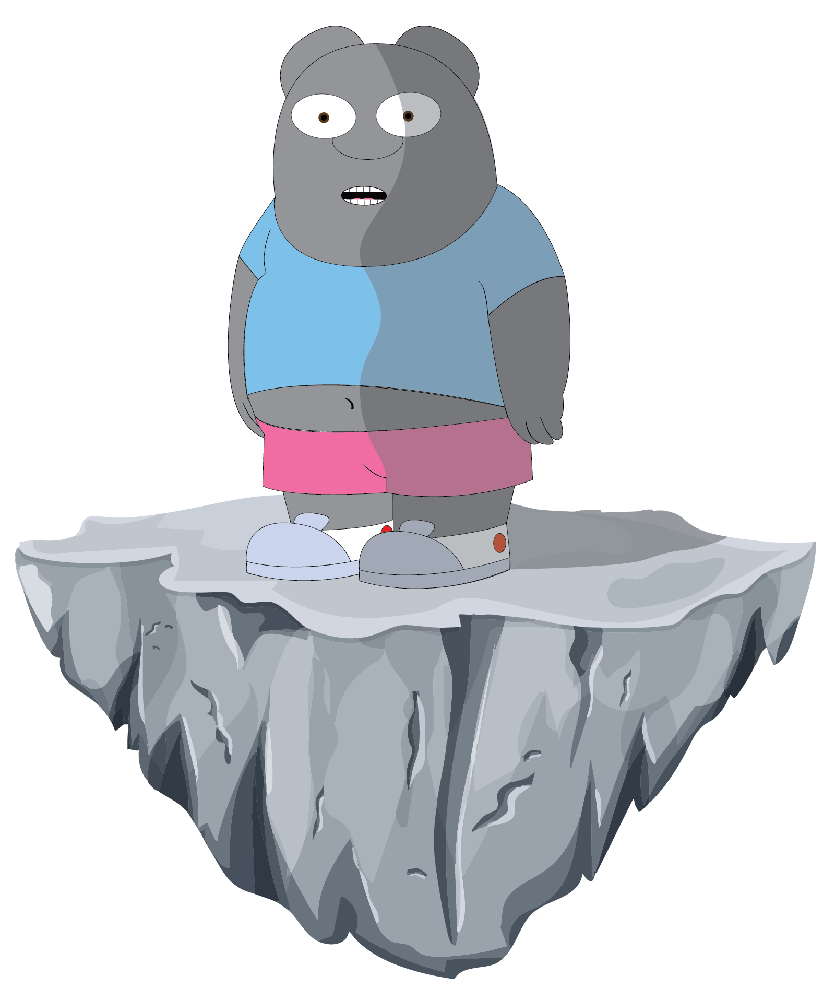
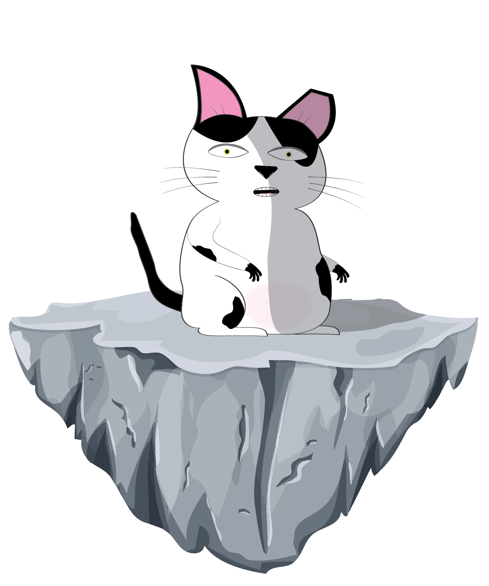
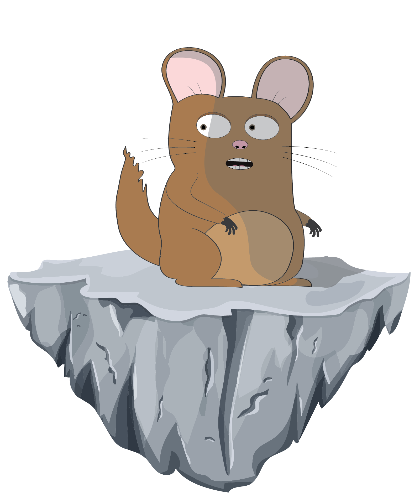

About The Unexpected Son:
Pop, a lovable and eccentric character, finds himself constantly involved in comical and slightly dangerous mishaps. His life takes an unexpected turn when he discovers he has a young son, with whom he has just been reunited. This eager and adventurous young man is quickly drawn into his father's chaotic world, whether he likes it or not. Accompanied by their loyal companions, Charles, a clever and resourceful friend, No Neck Roy, the level-headed voice of reason, and Pete, a gentle giant with a heart of gold until provoked.

Pop:
Pop is a seasoned used car salesman with a reputation for his quick wit and sharp negotiation skills. He's a character who thrives in the high-pressure environment of a used car dealership, using his charm and persuasive abilities to close deals and outsmart his competition. With a knack for reading people and understanding their motivations, Pop is always one step ahead in the game of sales.

Son:
A young man, haunted by a troubled past and simmering anger issues, unexpectedly discovers his long-lost father. This reunion, while initially fraught with tension and mistrust, offers him a chance to confront the demons of his childhood and forge a new relationship with the man who abandoned him.

Pete:
Pete was a gentle giant who wandered from place to place. One day, he saw a rundown house and simply claimed it as his. Surprisingly, no one objected. Pete lived in the house as is, finding comfort in its simplicity. The townsfolk accepted his unexpected inheritance and welcomed him as a part of their community.

Charles:
Charles is a quick-witted and adaptable individual who always seems to find a way out of a tight spot. His intelligence and ingenuity often surprise those around him.

No Neck Roy:
Roy was minding his own business, strolling home on a sunny afternoon, when disaster struck. A loose brick, dislodged by a sudden gust of wind, plummeted from a nearby rooftop and landed squarely on his head. The impact was immediate and painful, leaving him momentarily stunned. As the dizziness faded, he realized he couldn't turn his head without experiencing a sharp pain in his neck. From that day forward, Roy was known throughout the neighborhood as "No Neck Roy." Despite the unfortunate incident, he remained a cheerful and optimistic person, often telling stories about his "close encounter with a flying brick."